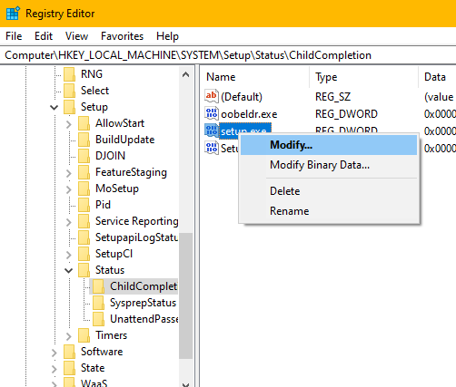

COMPLETE TUTORIAL: HOW TO INSTALL WINDOWS 10 ON THE SURFACE RT

May 15th 2020

August 19th 2020

Alexenferman
⚠ WARNING:
Alexenferman, Google, Microsoft, XDA Developers, are not responsible for any damages or bricks made to your device. Please do some research if you have any concerns about this installation, the leaked Windows 10 build, features and downsides. You are choosing to make these modifications, you should blame yourself for any mistakes you make. Once installed, the partition 4 of the drive (i.e. C:) will be completely wiped. Make sure you backed up all of your data to another drive or on a computer.
Do not install Windows 10 unless you have followed very carefully the tutorial and have Secureboot disabled! Not disabling Secureboot properly might lead to a unrecoverable soft bricked device as reported by some members.
The download links associated to Yandex Disk are not owned by Alexenferman. The files can be changed at any moment by its owner without further notice. If a file in question is not accessible, please leave a comment below.
Screenshots
BEFORE STARTING
Please read the warning very carefully. You understand that you are responsible for any damages made to your device.
Frequently asked questions
A lot of people have asked the same questions, so here are some of the questions and answers: FAQ: Install Windows 10?
You will need:
- Surface RT or Surface 2
- USB Flash drive (Minimum 8GB)
- Keyboard (USB Keyboard or Surface Keyboard
- Basic familiarity with the command prompt (cd / del / file.exe)
Identifying the Surface tablet generation
There are 2 different models of Surface tablets running Windows RT. You must know the model of your tablet to get the appropriate files for it. Turn your tablet around to see the colour of the metal back cover. The left one is the Surface RT and the right one is the Surface 2.
Download Options
There are different ways to get your files. You don't have to download them now, as the tutorial will link you to the files when they will be necessary.
Yandex disk: Due to the recent addition of the "Download limit exceeded" message, Yandex Disk is no longer a viable option to download files from. Instead, a Google drive mirror will be offered.

RT Drive
PART 1: PREPARING THE INSTALLATION
Creating a USB recovery drive
On your Surface RT, Click Start and click on the search icon, type "Create Recovery Drive" and select the search result. You may be asked to enter an administrator password or confirm your choice.
After the tool opens, make sure that "Back up system files to a recovery drive" is not selected, and then select "Next".
Connect the USB flash drive to your computer, select it, and then select "Next".
Select "Create". A large number of files need to be copied to the recovery drive, so it may take some time to complete.

It's time to download the install.wim file. Download the one for your specific device. (Surface RT or Surface 2)
Make sure to download the correct file for your specific device. By installing the wrong image, you will not be able to get past the setup screen.
Windows RT Surface 1 (RT).wim
Windows RT Surface 2.wim
To make the installation process easier, rename the downloaded file to "install.wim".
Copy the install.wim to your flash drive.
PART 2: INSTALLING THE PATCHED WINDOWS RT IMAGE
Basically, this patched Windows image is necessary since it has Bitlocker disabled and updates that patch the secureboot vulnerability are not installed, which allows you to take advantage of the exploit to partially disable secureboot.
Entering Recovery mode
Make sure Surface is turned off.
Plug the USB drive in the USB port of the tablet.
Hold the volume down button and press the Power button once.
When the Microsoft or Surface logo is displayed, release the buttons.
After seeing the prompt, select English US.
Select "Troubleshooting", "Advanced Options" and "Command Prompt"
If prompted for a recovery key, select "Skip this drive" at the bottom of the screen.
Formatting partition 4
In the command prompt window, type the following commands:
□ diskpart
□ sel dis 0
□ sel par 4
□ for quick fs = ntfs override
□ exit
Installing the patched Windows RT image
In the command prompt window, type the following command:
□ dism /apply-image /imagefile:[DIRECTORY] /applydir:c: /index:1
[DIRECTORY]: Replace this path with the path of the install.wim we copied to the drive.
Example: dism /apply-image /imagefile:d:\sources\install.wim /applydir:c: /index:1
Restart your tablet
Setup the tablet quickly, do not set any Microsoft account, do not connect to the internet.
For Surface 2 users, Windows will be in Chinese. Use Google translate with the camera function. You can change the Windows language in the Settings app.
Once you are done, open file explorer and click on "This PC"
If the C: drive does not have a lock icon, you successfully cracked Bitlocker and have installed the patched Windows 8.1 image!
PART 3: DISABLING SECUREBOOT
Disabling UAC
Download the disabling_uac.reg file.

Disabling_UAC.reg
On your Surface RT, run this file as an administrator.
Restart your tablet.
Modifying Registry keys
Open the registry editor
Navigate to HKEY_LOCAL_MACHINE \ BCD00000000
Make sure that the folder BCD00000000 is selected and click [File], [Unload/Uninstall Hive]
Installing the Secure Boot Debug Policy
Download the following file:

SecureBootPatch.zip
Extract the SecureBootPatch.zip and transfer it in the internal storage of the device.
Right-click the InstallPolicy.cmd and click "run as administrator".
Restart your tablet.
After restarting, you will see a screen like this:
Using the Volume buttons, select the option "Accept and Install"
Press the Windows button to select the option.
! ERROR!
! ERROR!
! ERROR!
Installing the Secure Boot Debug Policy
Run the command prompt and enter:
□ bcdedit /set {default} testsigning on
□ bcdedit /set {bootmgr} testsigning on
Restart your tablet.
! ERROR!
! ERROR!
! ERROR!
! ERROR!
! ERROR!
! ERROR!
To make sure that you have disabled Secure Boot (VERY IMPORTANT)
Click Start
Plug in a USB keyboard or your Surface keyboard
Click on the power icon on the top right part of the start menu
Press shift on your keyboard and at the same time click on restart
It will go into the recovery mode on the tablet (not the USB recovery)
Select "Troubleshooting"
Select "Advanced Options"
Select "Command Prompt"
It might ask for a password. Leave it empty and click on next.
You should see this text at the bottom right of the screen:
If you see this, you can now proceed to part 4!
Otherwise, if you don't know what you did wrong, you can repeat Part 3.
You must make sure that Secure Boot is actually disabled before proceeding! Do not skip this step, otherwise, if you do not disable secureboot, your Surface RT might refuse to boot anything at all! By this stage, Alexenferman, Google, Microsoft, XDA Developers, are not responsible for any permanent damages or bricks made to your device. You are choosing to make these modifications, you should blame yourself for any mistakes you make. You have been warned!
PART 4: INSTALLING WINDOWS 10
It's time to download the Windows 10 install.wim file. Download the one for your specific device. (Surface RT or Surface 2)
Make sure to download the correct file for your specific device. By installing the wrong image, you will not be able to get past the setup screen.
Windows 10 Surface 1 (RT).wim
Windows 10 Surface 2.wim
To make the installation process easier, rename the downloaded file to "install.wim".
Copy the install.wim to your flash drive.
NOTE: you can delete the old Windows 8 install.wim on your flash drive if the storage space is getting low. You will not need it anymore.
Entering Recovery mode
Make sure Surface is turned off.
Plug the USB drive in the USB port of the tablet.
Hold the volume down button and press the Power button once.
When the Microsoft or Surface logo is displayed, release the buttons.
After seeing the prompt, select English US.
Select "Troubleshooting", "Advanced Options" and "Command Prompt"
If prompted for a recovery key, select "Skip this drive" at the bottom of the screen.
Formatting partition 4
In the command prompt window, type the following commands:
□ diskpart
□ sel dis 0
□ sel par 4
□ for quick fs = ntfs override
□ exit
Installing Windows 10 image
In the command prompt window, type the following command:
□ dism /apply-image /imagefile:[DIRECTORY] /applydir:c: /index:1
[DIRECTORY]: Replace this path with the path of the install.wim we copied to the drive.
Example: dism /apply-image /imagefile:d:\sources\install.wim /applydir:c: /index:1
Restart your tablet.
! ERROR!
! ERROR!
! ERROR!
Booting up Windows 10

After waiting for a few minutes, you should see an error message. Don't worry, this is normal.
Using a keyboard, press the following keys:
External USB keyboard: Press SHIFT + F10
Surface keyboard: Press FN + SHIFT + End
Type "Regedit"
Navigate to HKEY_Local machine/SYSTEM/SETUP/STATUS/ChildCompletion
On the right pane, right-click "setup.exe"
Click on "Modify"
Change the Value to 3
Click OK
On the error message, click on OK.

PART 5: SETTING UP WINDOWS 10
Setting up Windows 10 for the first time
Follow the instructions on the screen to setup Windows 10.
Activating Windows 10
Open Powershell and type:
□ slmgr.vbs /upk
□ slmgr /ipk NPPR9-FWDCX-D2C8J-H872K-2YT43
□ slmgr /skms kms.03k.org
□ slmgr /ato
□ slmgr /skms zhang.yt
Installing frameworks and programs
Download the following files:
APPX1.rar

Microsoft.NET.Native.Framework.1.1.appx
Microsoft.NET.Native.Runtime.1.1.appx

Extract APPX1.zip
Open the APPX1 folder
copy the files on the USB drive and copy them to the Surface RT internal storage.
Right-click Appx.ps1, select "run with powershell".
Right-click AppxBundle.ps1, and select "run with powershell".
From the other files downloaded, install the Microsoft.NET.Native.Runtime.1.1.appx and Microsoft.NET.Native.Runtime.1.1.appx packages by simply running them.
You are done!
EXTRAS
You may notice that the OS is quite bear bones, and might not have all of the Surface features. See this section to install App Updates, Office 2013, and fix a few issues.
ALTERNATIVE INSTRUCTIONS
How to install Windows 10 on the Surface RT 💻

YouTube

13:28
Elektrohax
COMMENTS

⚠ Please read:
Every problem must be clearly detailed in the comment and must be described. Add images to services like postimage and then link them so that we can understand your problem. Also, make sure you read through the comment section and help section to make sure that your question was not already answered. Saying "It doesn't work" will never help you and your request might be ignored.
For a faster response, consider also describing your error on the XDA thread here and here, so a bigger community can give you the best answer.
Feel free to post comments (Feedback, problems to avoid) in this comment section.
Due to high demand, for Questions regarding the installation, (Is it fast? How well does it work?) ask your question on the XDA thread here or here. Any questions regarding the installation in this comment section will be ignored from now on.
_/(o_o?)\_ NOT FOUND {DISQUS-THREAD}